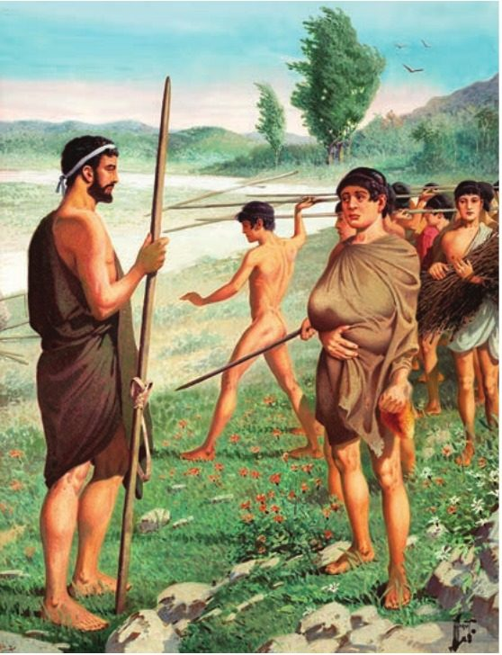
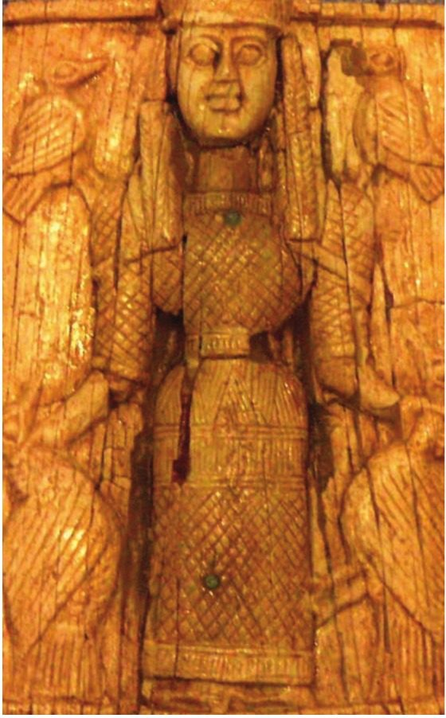

Spartan society to the Battle of Leuctra 371 BC · Lesson 9
The agoge: purpose and stages
What was the Spartan education for, how did a boy move through it — and how much of the famous picture belongs to the classical period?
Year 12 Ancient History · Section II, Option G · Present with → or space · Read on a phone with R

Spaced review · 6 minutes · from memory, no notes
Five questions
- 1Who wrote “Half of all the produce the ploughland bears”?Lesson 8
- 2When did Myron of Priene probably write?Lesson 8
- 3Who were the hypomeiones?Lesson 7
- 4When did Plutarch write, and why?A writer
- 5What is a helot?A term
- Tyrtaeus (fr. 6–7, Cooley A6), on the captured Messenians — mid-7th century BC, probably a Spartan
- Probably the 3rd century BC (Cooley); his words survive only in Athenaeus, who wrote about AD 200
- “Men of lesser status”: presumably Spartiates who had lost full status — perhaps through poverty, failing to finish the training or to be elected to a mess, or misconduct (Cooley)
- About AD 100. Cooley: “his main aim was to draw characters which could be instructive as moral examples”
- One of the unfree people of Laconia and Messenia, tied to the land they farmed for the Spartiates: “subjects of the Spartiates with limited personal freedom” (Cooley)
Answer 3: a Spartiate could lose his place by failing to finish the training. Today: the training itself.
Learning intentions and success criteria · 2 minutes
Today’s goals
- analyse the purpose and stages of the Spartan education as Xenophon presents it
- explain how the contest at the altar of Artemis Orthia changed over time
- describe the stages and features of the education in sequence, and explain why the ages in modern tables are reconstructions
- give the reason Xenophon offers for each hardship, and say why he offers it
- explain how Xenophon and Pausanias show change over time at the altar of Orthia
- write a 6-mark explanation of the purpose of the education
The syllabus says agoge, so use it — but no classical writer used it for Sparta. Xenophon simply calls it paideia, “education”.
Note-making · today’s routine
How to structure your notes
questions and key terms
short phrases, arrows (→ led to), abbreviations (Xen. = Xenophon, Plut. = Plutarch)
- 1Listen and look firstDon’t copy while the slide is being explained.
- 2Write your own notes at each ✎ checkpointPhrases, not sentences. Arrows for cause and effect.
- 3Compare with the model notesThey appear one row at a time. Add what you missed in a second colour.
- 4Copy each cue question into the left columnLater, cover your notes and answer the cue questions from memory.
- 5Finish with a three-sentence summaryFive checkpoints: the state’s business · Xenophon’s system · the stages · Orthia then and now · what it was for.
Key vocabulary
Words you will use today
| The system | Meaning |
|---|---|
| agoge | “upbringing” or “training”: a later name for the Spartan state education; no classical source uses it for Sparta |
| paideia | “education”: the usual classical word, used by Xenophon |
| paidonomos | the “boy-herd”: the senior Spartan in charge of the boys’ education |
| paidagogos | elsewhere in Greece, usually a slave who looked after a boy and took him to school |
| agele (pl. agelai) | a “herd”: Plutarch’s word for a group of boys who lived and trained together |
| Artemis Orthia | a goddess whose sanctuary beside the Eurotas was famous for the boys’ contests |
| ephebe | a youth on the edge of manhood; Pausanias’ and Plutarch’s word for those whipped at Orthia |
| The age groups | Meaning |
|---|---|
| paides | boys: the youngest stage (from seven, says Plutarch) |
| paidikoi | teenagers: Xenophon’s word for the middle stage (many books write paidiskoi) |
| hebontes · eirens | the young men, probably about 20 to 30: Xenophon mostly says hebontes, Plutarch eirens. Cooley’s glossary gives both as “a Spartan man in his twenties” |
| hippeis | “knights”: 300 young men chosen each year, who had probably never been cavalrymen |
| hippagretai | the three men picked by the ephors (“the three outstanding members of the year group”), who each chose a hundred hippeis |
| syssition (pl. syssitia) | a common mess; membership was needed for full citizenship (Lesson 12) |
Spelling: Cooley’s translations use Greek forms (Lykourgos, Lakedaimonians, Ortheia). In your own writing use Lycurgus, Lacedaemonians, Orthia.
1 · Education as the business of the state · I do
Not the father’s decision
[16.1] It was not the father’s decision whether to bring up his offspring. He would first have to bring it in his arms to the place called the Lesche (public meeting place), where the elders of the tribesmen gathered. Having assessed the infant, they instructed him to rear it, if it seemed sturdy and robust … But if it seemed weak or deformed, they sent it to the so-called Apothetai (the place of cast-offs), a great chasm at the foot of Mount Taygetos.
Plutarch, Life of Lykourgos 16.1 (part) · written c. AD 100 · trans. B. Wilson · Cooley D73
Who decided — and how far can we trust it?
The elders of the tribe, not the father — nor the ephors or the gerousia. But Plutarch wrote nearly five centuries after Xenophon: treat this as tradition, not proven practice.
Cooley: the Spartans’ idea of public business “included the raising of new generations of citizens, which in most Greek cities was a matter of private family life.”
“This special Spartan education was a precondition for becoming a citizen, and it created a high degree of conformity within Spartan society, while also separating Spartiates from all others” (Cooley).
1 · Education as the business of the state · I do — who tells us?
Two witnesses, nearly five centuries apart — and a late word
An Athenian who fought for King Agesilaus. “The Spartans gave him an estate near Olympia, and he may have lived in Sparta and even had his sons participate in the Spartan education system” (Cooley). His Constitution of the Lakedaimonians, probably written in the late 390s or 380s BC, describes the boys in chapters 2–4.
A Greek writing under Roman rule; his Life of Lykourgos 16–21 is the other fairly full account. But Cooley warns that “much of his material also dates from after Sparta’s decline in the fourth century”, and “late sources on the issue, such as Plutarch, have to be treated with caution.”
Cooley: “for the classical period, we have to rely mainly on Xenophon who was clearly familiar with the system, but only offers a rough overview.”
The word agoge “is never applied by any classical-period source specifically to Sparta’s public education”; “It does not appear in any source in a specifically Spartan context until c. 240–230 BC.” Xenophon’s word is paideia. Later writers do use it: in the translation in Cooley of Plutarch, Agesilaos 1, “The agoge was a harsh and painful way of life” (D75).
Notes checkpoint 1 of 5
Education as the business of the state
Write your own notes first. Then compare, row by row, and add what you missed in a second colour.
2 · Xenophon on the boys · We do — Source 7.1
Who ran the system?
[2.1] … In other parts of Greece, parents who claim to educate their sons as well as possible put them under the care and control of a paidagogos at the very first opportunity … [2] Lykourgos did the opposite. Instead of letting each individual father appoint a slave as paidagogos, he gave overall charge of boys’ education to the so-called paidonomos (boy-herd), who was appointed from one of the members of the highest political class. He gave this official full authority to compel their attendance, to supervise them, and to punish them severely if they misbehaved. He gave him a team of young men (hebontes) armed with whips with which to inflict punishment where necessary. As a result high levels of respect for authority and general discipline are characteristic of their society.
Xenophon, Constitution of the Lakedaimonians 2.1–2 (part) · an Athenian, probably writing in the late 390s or 380s BC · trans. B. Wilson · Cooley D74
Who was in charge?
A paidonomos, the “boy-herd”: a state official from the top class, not a family slave.
How was it enforced?
Young men with whips. Later in the passage, any citizen present could give orders and punish, and the sharpest eirens took charge when no adult was there.
What does Xenophon say it achieved?
Respect for authority and discipline — obedience.
Why start with “the opposite”?
Every point is set against other Greeks: description becomes praise.
2 · Xenophon on the boys · I do — Source 7.1 continued
The features — and Xenophon’s reasons
| § | What Lycurgus laid down | The reason Xenophon gives | So it trained … |
|---|---|---|---|
| 2.3 | bare feet: “compelling them to go barefoot” | “better at climbing hills and safer when coming down steep slopes” | soldiers who could move fast over rough ground |
| 2.4 | “one tunic all the year round” | “better prepared to face cold and heat alike” | endurance |
| 2.5 | “only enough food to ensure that they never felt full” | “better able to keep going on an empty stomach where necessary” | endurance on campaign |
| 2.6–8 | “alleviate their hunger pangs by some stealing” — but a beating if caught | “more skilful at finding supplies and better soldiers overall”; the caught are punished “for being ineffective thieves” | resourcefulness and cunning |
| Purpose | Every point is built as “Lykourgos did the opposite” of other Greeks: an admirer’s case that Sparta’s way produced better men. | ||
Xenophon, Constitution of the Lakedaimonians 2.3–8 · trans. B. Wilson · Cooley D74. The contest at the altar of Orthia (2.9, also Cooley C84) is in section 4.
2 · Xenophon on the boys · We do — how far can we trust him? If time
An admirer’s account — and a picture built from a later writer
What kind of work is Xenophon’s Constitution?
Cooley: “a kind of political pamphlet, defending Sparta against its critics”, which “probably depicts a somewhat idealised Sparta”. He “credits more aspects of Spartan society to the lawgiver than any other ancient source”.
How does he explain away the stealing?
“So the Lakedaimonians punish those who are caught for being ineffective thieves.” The beating punishes failure, not theft.
Is the picture evidence?
No: it is modern. Its barefoot, cloaked boys gathering reeds “that grew beside the River Eurotas” come from Plutarch (D76), writing nearly five centuries after Xenophon — not from classical evidence.
Check for understanding · gesture vote · hold up 1–4 fingers
Which of these is not in Xenophon’s account of the boys?
- 1Boys went barefoot to harden their feet
- 2Boys wore one tunic all year round
- 3Reading and writing lessons were kept to the minimum
- 4Boys could steal food, but were beaten if caught
That is Plutarch, writing nearly five centuries after Xenophon: “Reading and writing lessons were restricted to the minimum necessary” (Lykourgos 16.6, Cooley D76). Section 3 tests the claim.
Notes checkpoint 2 of 5
Xenophon on the boys
3 · Growing up: the stages · We do — Source 7.2
Two descriptions of the older boys and young men
[3] The ephors start by selecting the three outstanding members of the year group, who are designated hippagretai (guard commanders). Each of these selects a hundred others, openly stating the reasons for choosing this one and rejecting that. [4] As a result, those who fail to win the honour of selection become enemies of those who rejected them and bitter rivals of those who were chosen in their stead.
Xenophon, Constitution of the Lakedaimonians 4.3–4 · probably late 390s or 380s BC · trans. B. Wilson · Cooley D79
The 300 were the hippeis. Cooley: “although the name means ‘knights’ they had probably never been actual cavalrymen”.
As soon as they all reached the age of seven, he took over control and enrolled them in agelai (herds), thus ensuring that they all shared the same discipline and upbringing, and so got used to playing and studying together. …
This eiren, therefore, is a twenty-year old, and he commands those put under him in practice battles, while in barracks he makes them serve his meals as if they were servants.
Plutarch, Life of Lykourgos 16.4 and 17.2 · written c. AD 100 · trans. B. Wilson · Cooley D76, D78
Which writer gives ages — and why does that matter?
Only Plutarch, writing nearly five centuries after Xenophon, when the system had been revived and changed. Xenophon gives none. And Plutarch has to explain “eiren” to his readers.
3 · Growing up: the stages · I do — putting the sources together
The stages of growing up — a modern reconstruction
3 · Growing up: the stages · what did boys learn — and who went through it? If time
More than physical training?
Cooley: “Spartan youths were expected to perform at such occasions, and were clearly trained to do so” — at festivals (Lesson 10).
After supper the eiren might ask a boy “to say who was the best among the citizens” (Plutarch, D80). Cooley: the skill was “probably practised at common meals when the boys were expected to answer questions accurately and in the appropriate manner”.
Plutarch: “Reading and writing lessons were restricted to the minimum necessary” (D76). But Stephen Hodkinson, introducing the inscriptions in Cooley: “recent studies have shown that the Spartiates were far more literate than previously supposed”. Cooley is more careful: “it seems likely that most Spartiates achieved at least a basic level of literacy”.
Not the heirs to the throne: “The law exempts boys being raised as future kings from this compulsory practice” (Plutarch, Agesilaos 1, D75). Yet the mothakes, boys “from poor or disenfranchised families” (Hodkinson, as cited by Cooley), did: they “share exactly the same education” (Phylarchus, 3rd century BC, D30 — Lesson 7).
Notes checkpoint 3 of 5
The stages of growing up
4 · The altar of Artemis Orthia, then and now · I do
One sanctuary, many centuries


Beside the Eurotas in Limnai (Lesson 2), “especially famous as the site of the boys’ contests” (Cooley). A modest temple: the Archaic temple measured about 16 × 7 m (W. G. Cavanagh, in Cooley).
“This festival shows above all the dangers of later tradition (and a memorable story) obscuring real history.”
Cooley says the Roman-period whipping contests “seem to have been so popular as to merit the building of the semi-circular seating of the third-century AD Roman theatre”. The remains mix many centuries.
4 · The altar of Artemis Orthia, then and now · We do — continuity and change
One altar, two rituals
[9] He made it a special competition to steal cheeses from the altar of Artemis Orthia, while giving others to task of whipping the would-be thieves, thus seeking to demonstrate that a little pain means a long term gain in fame and delight.
Xenophon, Constitution of the Lakedaimonians 2.9 · probably late 390s or 380s BC · trans. B. Wilson · Cooley D74 and C84 (“He” is Lycurgus)
There was an oracle that the altar should be bloodied with human blood: this used to be someone chosen by lot, but Lykourgos changed this to a whipping of ephebes, so that the altar could get its fill of human blood in this way: the priestess stands by them, holding the wooden statue of the goddess. It is small and therefore normally light, but if the floggers hold back their strokes because of an ephebe’s good looks or noble birth, then the statue becomes too heavy for the woman to carry, and she blames the floggers and says that it is their fault that she is struggling.
Pausanias, Description of Greece 3.16.10–11 · a Greek traveller writing under Roman rule, 2nd century AD · trans. in Cooley C93
What continued?
The altar, the whips, the young — and the credit to Lycurgus.
What changed?
A stealing contest with whips became a whipping to bloody the altar, watched by the priestess.
Why tell a story of human sacrifice?
Perhaps to give a Roman-period ritual an ancient, sacred origin. Cooley calls it “an entirely specious justification”.
4 · The altar of Artemis Orthia, then and now · the witnesses in order If time
From a contest to a spectacle
| Witness | When | What they describe |
|---|---|---|
| Xenophon | probably late 390s or 380s BC | a competition to steal cheeses, with others whipping “the would-be thieves” (D74, C84) |
| Plato, Laws 633b–c | 4th century BC | endurance of pain “in the ‘raids’ with many whippings resulting each time” (C85) |
| Cicero, a Roman | 1st century BC | boys beaten at the altar, “even, on several occasions as I heard when I was there, with fatalities” (C92) |
| Plutarch | c. AD 100 | “present day ephebes, many of whom I have seen being flogged to death at the altar of Artemis Orthia” (D80); a yearly contest “called the flogging” (C94) |
| Pausanias | 2nd century AD | a whipping of ephebes to bloody the altar, said to replace a human sacrifice (C93) |
In classical times the contest “was not the show for sadistic Roman tourists it later became”, and “the only fourth-century BC sources show a less gruesome contest.”
Check for understanding · hinge question · one, two or three fingers
The cheese-stealing contest at the altar of Orthia is described by:
- 1Pausanias
- 2Xenophon
- 3Plutarch
Xenophon, Constitution of the Lakedaimonians 2.9 (Cooley D74, C84). Pausanias and Plutarch describe the Roman-period flogging.
4 · The altar of Artemis Orthia · You do · 12 minutes · press K for the timer
Your turn: annotate Sources 7.1 and 7.3 — O, V, P, R, L
- O — the Spartans gave him an estate and he may have lived in Sparta: does that make him reliable, or simply well informed?
- V — list the officials and the features of the boys’ life he describes
- P — how does “Lykourgos did the opposite” turn description into praise?
- R — how does he explain away the stealing?
- L — no ages, and nothing in this passage on girls or on boys who failed: why does that matter?
- O — a traveller under Roman rule: how many centuries after Xenophon?
- V — what does he tell us about the ritual in his own day, and the priestess?
- P — why might a guide for educated visitors record the story behind a ritual?
- R — he credits the change to Lycurgus: why be suspicious (Lesson 3)?
- L — can a 2nd-century AD account show what happened in the 4th century BC?
Xen.: O well informed (estate from Sparta; perhaps lived there), but an admirer, writing prob. late 390s/380s BC · V paidonomos + whip-carrying young men; bare feet, one tunic, hunger, stealing; cheese contest · P “the opposite” of other Greeks = praise · R stealing excused: caught = “ineffective thieves” · L this passage: no ages, nothing on girls or failures. — Paus.: O 2nd c. AD, c. 550 yrs later · V whipping of ephebes; priestess + statue · P explains a strange ritual to visitors · R Lycurgus credited: “specious” (Cooley) · L evidence for the Roman ritual, not the classical one.
Notes checkpoint 4 of 5
The altar of Artemis Orthia, then and now
5 · What was it for? · I do — pulling it together
Five purposes — and whose purposes they are
“high levels of respect for authority and general discipline”Xenophon 2.2 (D74)
bare feet, one tunic, too little food: ready for hills, cold, heat and hungerXenophon 2.3–5 (D74)
stealing to make them “more skilful at finding supplies and better soldiers overall”Xenophon 2.7 (D74)
the cheese contest at Orthia; the yearly choice of 300 hippeis, in a stage that “served to distinguish the future élite”Xenophon 2.9, 4.3 (D74, D79); Cooley
a precondition for citizenship that “created a high degree of conformity”Cooley, introduction
Each feature served the state, not the family: obedient, enduring, resourceful soldiers who were alike, and set apart from perioikoi, helots and other Greeks.
The reasons are Xenophon’s, an admirer’s, and the stamp of Lycurgus on each is his too. The Spartans may not have put it so neatly.
Notes checkpoint 5 of 5
What was the education for?
Finish your notes
Summary: three sentences
- Who ran the education, and what was it for?
- What were the stages — and how sure are we of the ages?
- How did the contest at the altar of Orthia change?
At Sparta the state, not the family, raised the boys: Xenophon, our best classical witness, describes a public education under a paidonomos in which hardship, hunger and licensed stealing trained obedient, enduring and resourceful soldiers, though the word agoge itself is a later label. Boys moved from the paides (from seven, says Plutarch) to the teenage paidikoi and then to the young men, probably aged about 20 to 30, who were elected to a mess and competed to be among the 300 hippeis — a sequence pieced together by modern historians, mostly from Plutarch’s ages. At the altar of Artemis Orthia, Xenophon’s cheese-stealing contest became a brutal Roman-period flogging, which Pausanias explained with a story of human sacrifice ended by Lycurgus.
6 · Answering HSC questions
An HSC-style question, written for this lesson
25 marks, about 45 minutes — about 1.8 minutes a mark. 6 marks ≈ 11 minutes.
NESA: “Relate cause and effect. Make the relationships between things evident. Provide why and/or how.”
Not what the education was, but what it was for: each feature tied to the aim it served.
No HSC paper from 2019 to 2025 has asked a short question on the stages or purpose of the boys’ education. The 2025 paper asked a 15-mark question on education and training: that is Lesson 10.
HSC-style, written for this lesson · Section II · 6 marks
Explain the purpose of Spartan education in this period.
Not from a past paper. Take it apart, write it yourself, then check it against NESA’s 6-mark criteria and an annotated model.
HSC-style question · We do — deconstruct the question
What the question is really asking
NESA: “Relate cause and effect.” So: feature → why → what it achieved. A list of hardships is a description.
What it was for: obedience, endurance, resourcefulness, competition, and citizens who were alike. Purposes, plural — more than “to make soldiers”.
The Archaic and Classical periods, to 371 BC: lead with Xenophon. Plutarch and Pausanias wrote much later — label them, and keep the Roman flogging out of the classical picture.
About 11 minutes · a judgement first · three or four purposes, each with a feature and a named source · about 130–200 words.
HSC-style question · NESA’s 6-mark criteria and the 2025 markers’ feedback
What the markers reward
| Marks | Criteria (2025, part (b)) |
|---|---|
| 6 | Provides an informed explanation relevant to the question · Communicates effectively using appropriate historical terms and concepts |
| 5 | Provides an explanation relevant to the question · Communicates using appropriate historical terms and concepts |
| 4 | Provides some explanation relevant to the question · Communicates using some historical terms and concepts |
| 2–3 | Provides some information relevant to the question · May use some historical terms and/or concepts |
| 1 | Makes a general statement(s) relevant to the question |
In better responses, students were able to assess a number of features of Sparta’s education and training regimes, including physical, military and ideological areas (c)
Areas for students to improve include focusing on the methods of controlling the helots, rather than describing the role of the helots (b)
The same trap here: focus on the purposes, rather than describing the boys’ life.
Source: NESA, 2025 HSC Ancient History Marking Guidelines, Section II part (b) — the criteria for a 6-mark “explain” question on a different topic (“Explain how the Spartans controlled the helots”) — and the 2025 marking feedback for Question 11.
HSC-style question · You do · 11 minutes · press K for the timer
Explain the purpose of Spartan education in this period. (6 marks)
- a judgement in your first sentence
- three or four purposes, each tied to a feature
- Xenophon named, with his reasons
- terms: paidonomos, hebontes, hippeis, syssition
- about 130–200 words
Start: “Spartan education aimed to turn every boy into …”
HSC-style question · Check your answer — a model written for this lesson
Feature → reason → purpose, then evaluate
Model written for this lesson · about 200 words, about 11 minutes
Marker’s margin
HSC-style question · three answers that fall short
Why answers drop marks
Spartan boys left home at seven and lived in groups. They went barefoot, wore one tunic all year and were given little food. They were allowed to steal but were beaten if they were caught.
Accurate features, but no purposes: it never says what any of it was for.
The purpose of Spartan education was to make strong soldiers. Going barefoot made boys better at climbing hills and hunger trained them to keep going without food …
A real explanation, but only military, and no named source. Obedience, competition and citizenship are missing.
The main purpose was to teach boys to bear pain: every year they were whipped at the altar of Artemis Orthia, often to death, to prove their courage.
That flogging belongs to the Roman period (Cicero, Plutarch, Pausanias). Xenophon’s classical contest was stealing cheeses.
Written for this lesson to show the marking criteria — not real student answers.
HSC-style question · Self-mark
Mark your own answer
Fewer than five ticks? Add the missing move in a second colour.
Outline the stages of Spartan education. (4 marks)
Use the stages diagram: name each stage, say who describes it, and hedge the ages.
Underline every “because” and “so” in your answer. No underlines means a description, not an explanation.
Practice and review · 1 of 5 · sequencing
Put these stages of a Spartan boy’s life in order — and name the source for each
Remember: the ages come from Plutarch and Cooley’s reading; Xenophon gives none.
- AHe is elected to a mess (syssition), by a unanimous vote.
- BHe is inspected by the elders of his tribe.
- CHe walks in silence, hands under his cloak, eyes on the ground.
- DAs one of the young men, he may be chosen as one of the 300 hippeis.
- EHe leaves home to live in a herd (agele) with boys of his age.
- FHis youth over, he may hold the highest offices, and he hunts to stay fit.
- GHe serves meals to an eiren in barracks and fights in practice battles under him.
- HHe goes without a tunic and is given one cloak a year.
- B — birth (Plutarch, Lykourgos 16.1, D73)
- E — from seven (Plutarch 16.4, D76)
- H, G, C in any order — the years before about 20, in two writers’ words: from twelve (Plutarch 16.6, D76); under an eiren (Plutarch 17.2, D78); the teenage paidikoi (Xenophon 3.4, D77)
- A — when the education is complete, about 20 (Cooley)
- D — the young men, probably 20 to c. 30 (Xenophon 4.3, D79)
- F — after the young men’s stage (Xenophon 4.7, D79)
Practice and review · 2 of 5 · true, false, justify
True or false? Justify with a source
- 1Xenophon gives the age at which each stage of the education began. False — he gives no ages; the ages come from Plutarch (D76, D78).
- 2The paidonomos was helped by young men carrying whips. True — “a team of young men (hebontes) armed with whips” (Xenophon, D74).
- 3Classical writers regularly called the Spartan education the agoge. False — the term “is never applied by any classical-period source specifically to Sparta’s public education” (Cooley); Xenophon calls it paideia.
- 4Xenophon describes a contest to steal cheeses from the altar of Artemis Orthia. True — Constitution 2.9 (Cooley D74, C84).
- 5In Xenophon, a boy caught stealing was punished for stealing at all. False — the Spartans “punish those who are caught for being ineffective thieves” (2.8).
- 6Xenophon’s hebontes and Plutarch’s eirens were two different age groups. False — Cooley treats them as the same young men: “hebontes in Xenophon, eirens in Plutarch”.
- 7Pausanias says Lycurgus replaced a human sacrifice at Orthia with a whipping of ephebes. True — C93; Cooley calls this “an entirely specious justification”.
- 8Every Spartan boy went through the education, including the heirs to the throne. False — “The law exempts boys being raised as future kings from this compulsory practice” (Plutarch, D75).
Practice and review · 3 of 5 · write an analytical paragraph
How useful is Xenophon’s account (Source 7.1) for understanding Spartan education in the classical period?
Xenophon’s account is the most useful evidence we have for the classical education, but it shows the system as an admirer wanted it seen. Writing probably in the late 390s or 380s BC, before the changes that followed Leuctra, he describes a compulsory public education run by a paidonomos with whip-carrying young men, and boys who went barefoot, wore ‘one tunic all the year round’ and were kept hungry. Each hardship comes with a military reason — bare feet made boys ‘better at climbing hills’, and licensed stealing made them better soldiers — so the account reveals the aims of the system as well as its features. Yet Cooley calls the work ‘a kind of political pamphlet, defending Sparta against its critics’: every point is framed by ‘Lykourgos did the opposite’, the stealing is explained away, and this passage gives no ages and says nothing of girls or of boys who failed. Even so, since Plutarch wrote centuries later about a changed system, Cooley concludes that ‘we have to rely mainly on Xenophon’. Xenophon is therefore highly useful for what the classical education aimed to do, but much less reliable for how harsh it was or how it worked year by year.
Practice and review · 4 of 5 · extended response · HSC-style, written for this lesson
To what extent was the main purpose of Spartan education to produce soldiers? (10 marks)
Use evidence from relevant sources. Plan it in four moves:
- Thesis in your first sentence: largely military — but it also made citizens who were obedient and alike.
- The military purpose: Xenophon’s reasons for each hardship (Cooley D74); the hippeis and their rivalry (D79).
- The civic purpose: obedience to every citizen; music, dance and Laconic speech; a precondition for citizenship that “created a high degree of conformity” (Cooley).
- Weigh the evidence: Xenophon idealises and gives no ages; Plutarch and Pausanias describe a later, changed system (the altar of Orthia).
The 6-mark model in section 6 is the core of this answer.
Practice and review · 5 of 5 · the Quick Checks for sections 1–3, with answers written for this lesson
Quick Check review
- Why was education at Sparta a matter for the state rather than the family? Spartans counted “the raising of new generations of citizens” as public business; the education was a precondition for citizenship and created conformity (Cooley). Plutarch even has the elders of the tribe decide whether a baby was reared (D73).
- Who was the paidonomos, and who helped him enforce discipline? The “boy-herd”, a senior Spartan from the top class with full power to compel and punish; young men (hebontes) with whips helped him, and any citizen could punish the boys (Xenophon, D74).
- Name four hardships Xenophon says Lycurgus imposed. Why were boys punished for stealing if stealing was allowed? Bare feet, one tunic all year, never enough food to feel full, stealing to make up the rations. Those caught were punished “for being ineffective thieves”.
- Why does Cooley say the word agoge should be used with care? No classical source uses it for Sparta; it first appears in a Spartan context c. 240–230 BC. Xenophon’s word is paideia.
- Put the main stages in order. Paides → paidikoi → the young men, whom Xenophon calls hebontes and Plutarch eirens: one stage, not two.
- Who were the hippeis, and how were they chosen? 300 young men chosen each year: the ephors picked three hippagretai, and each chose a hundred, giving his reasons (D79). Despite the name, probably never cavalry.
- Why must the ages in modern tables be treated as reconstructions? Xenophon gives none; the ages come from Plutarch, writing about AD 100 after the system had changed, and Cooley hedges them (“disputed”, “probably”).
- Give one piece of evidence that the education involved more than physical training. Boys answered questions such as who was “the best among the citizens” (Plutarch, D80); youths were trained to perform music and dance at festivals (Cooley).
Exit ticket · before you leave
Two sentences
One hardship of the boys’ education — and the reason Xenophon gives for it.
One thing that changed at the altar of Orthia between Xenophon and Pausanias.
Next lesson: what the archaeology of Orthia shows — lead offerings and a victor’s dedication — the choruses of the Gymnopaedia, and two historians, Kennell and Ducat, on how much of the agoge is a later reconstruction.
Sources and credits
Where everything comes from
Quoted from the translations in M. G. L. Cooley (ed.), Sparta, LACTOR Sourcebooks in Ancient History 21, 2nd edn (Cambridge University Press, 2023): Xenophon, Constitution of the Lakedaimonians 2, 3.4 and 4.3–7 (D74 with 2.9 also C84, D77, D79, trans. B. Wilson); Plutarch, Life of Lykourgos 16.1, 16.4–7, 17.2 and 18.1–2 (D73, D76, D78, D80, trans. B. Wilson), Life of Agesilaos 1 (D75) and Spartan Customs 40 (C94); Pausanias, Description of Greece 3.16.10–11 (C93); Plato, Laws 633b–c (C85); Cicero, Tusculan Disputations 2.34 (C92); Phylarchus in Athenaeus, Scholars at Dinner 6.102 (D30); Tyrtaeus fr. 6–7 (A6, trans. K. Hughes). Cooley’s glossary; his introductions to the literary sources, the education system, the young men, the mothakes, the helots, the assembly, Artemis, Artemis Orthia and the town of Sparta (section K); and his notes on D41, D77–D79, C94 and E53b (with J. F. Lazenby, N. M. Kennell and J. Ducat as cited there); S. Hodkinson’s introduction to the inscriptions and W. G. Cavanagh’s introduction to Laconian archaeology, both in Cooley.
Marking criteria (2025 Section II part (b)) and marking feedback for Question 11: NSW Education Standards Authority, 2025 HSC Ancient History marking guidelines and feedback. © NESA. NESA glossary of key words for “explain”. The 6-mark and 10-mark questions were written for this lesson.
- A modern illustration of barefoot Spartan boys in rough cloaks, watched by an older man — an artist’s imagining, not ancient evidence — Bradley, Fig 3.13
- Remains of the Sanctuary of Artemis Orthia beside the Eurotas — Clarke & Garner, Fig 8.8
- A carved ivory or bone figure of Artemis Orthia in a patterned dress, between two birds — an ancient artefact — Bradley, Fig 3.23
Books: P. Bradley, The Ancient World Transformed (Cambridge University Press, 2014); Clarke & Garner, Spartan society textbook (school copy).
Textbook images are reproduced for teaching, with the source given under each one. Drawn for this lesson: the stages of growing up (a modern reconstruction, from Cooley) and the table of Xenophon’s features and reasons (from Cooley D74).